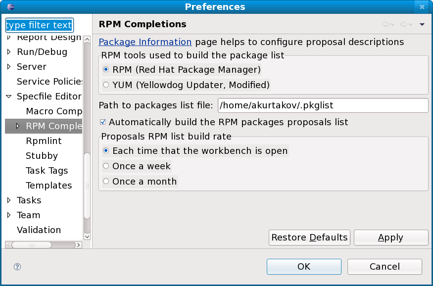
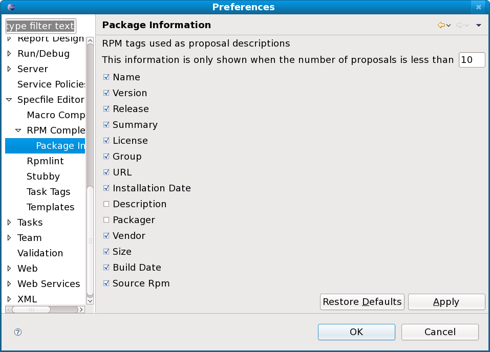

| Customizing Editor Settings | ||
|---|---|---|
|
|
|
|
| Rpmlint | Updating This Document | |
Spec file editor should be completely working without any tweaking of the settings but doing it you should be able to save even more time.
Simple properties allowing customizing the generated ChangeLog entries (Ctrl+Alt+C).

Note: Be sure to set the Author name and Author email in ChangeLog plugin preferences so they get properly generated.
This page is really useful when you have rpmlint installed in place different from the default (/usr/bin). The ability to set custom rpmlint is especially useful during development of quick-fixes or rpmlint itself. Another option on this page is whether warnings should be shown for space usage or for tabs usage, when they are used in a mixed mode in the spec file.

This page provides the ability to select the task tags to be used when searching for tasks. Task tags are looked only in comments. When a task tag is found it is added to the Tasks view and a marker in the editor is created. Task tags used by default are TODO and FIXME. Users have the power to define their own Task tags by just pressing the New button and entering the new tag (e.g. REMOVE).

A list of predefined/generic templates to speed up creation various fragments of the specfile in the editor. Provided features match the templates functionality provided by Java editor.

The user can manipulate the list by:
* Adding new template * Editing existing template * Deleting existing template * Import a list of templates * Export the list of templates for future usage on another machine or for providing default templates for your team
Properly setting up macros locations is a crucial part for the editor to work properly. Having all the macros path configures enables the editor to properly highlight, autocomplete and showing hover for all the available macros.
The path used for looking for macros can be formed by either single files or a directory. When a directory is added to the path all files in it are read and macros from them added to the list of available macros.

This setting controls how to present macros value in hovers in case they contain another macros in their value. To distinguish the options look at the following hovers:


Using distribution specific tools enhances auto-completion for packages with not only installed rpm files but also with the packages available in the online repositories. Support is there for YUM and URPMI tools. Users of other tools should contact us to find a way for adding support for them. If none of the distribution tools is selected packages auto completion will contains only the installed packages.

Additional settings are the frequency of refreshing packages list and the file to store the package list.
These are just visualization tweaking options like the number of packages to show details for and what RPM tags should the hover contains.

|
|

|
|
| Rpmlint | Updating This Document |